보이지 않는 갈등, 층간소음
층간소음이 미치는 영향
층간소음은 크기에 따라 인체에 미치는 영향이 달라집니다.
 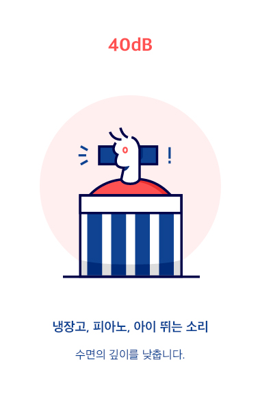
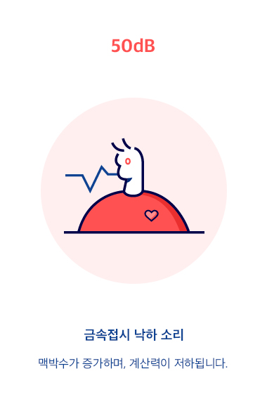
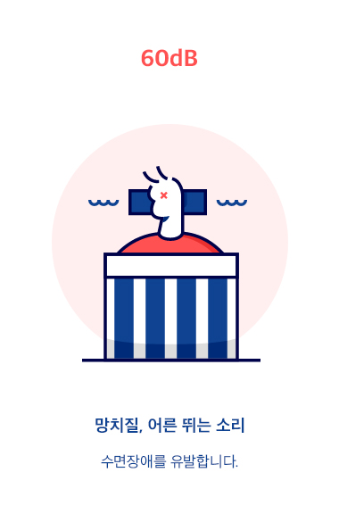
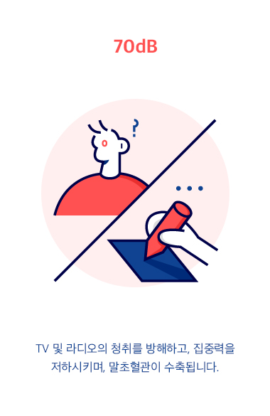
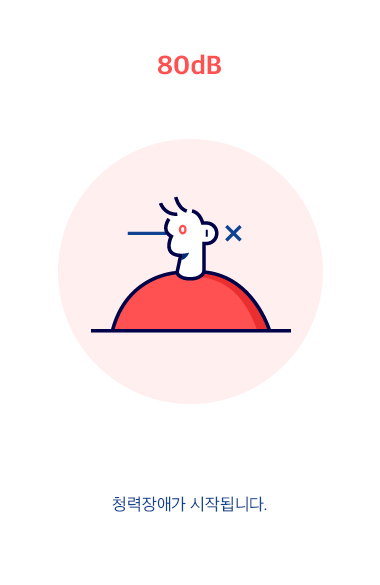
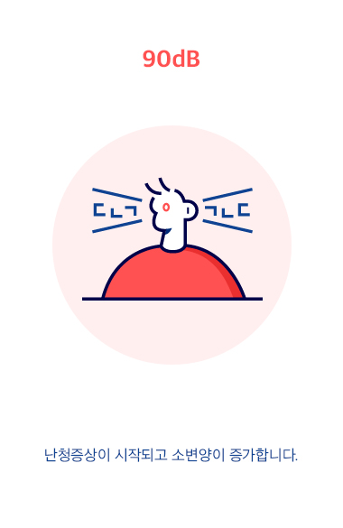
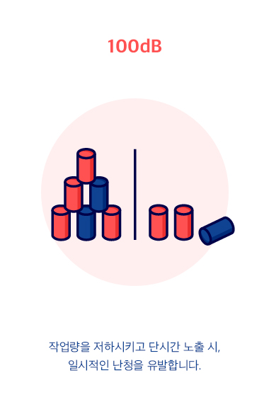
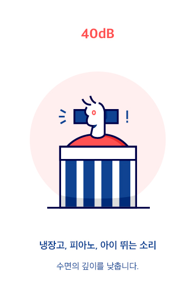
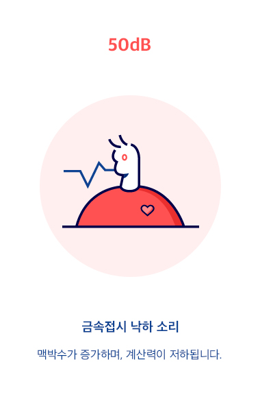
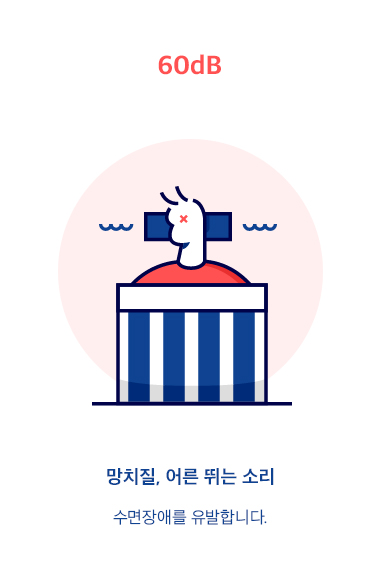
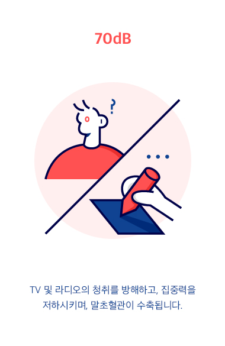
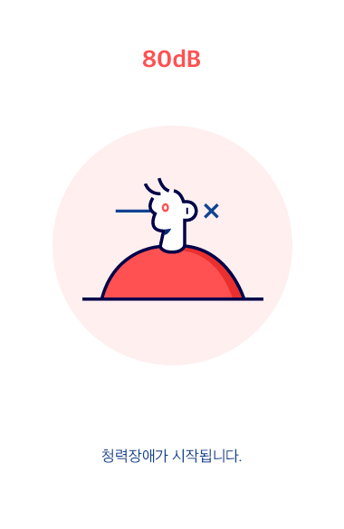
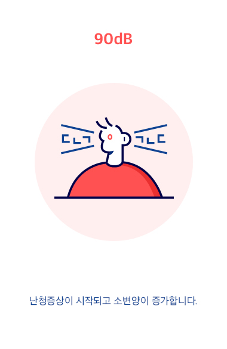
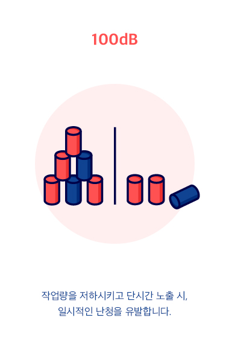
이 정도는 괜찮지 않나요?
'이 정도는 괜찮겠지.' '이 시간에는 괜찮을 거야.' 라는 개인의 주관적인 생각으로
인해 발생되기 시작하는 층간소음은, 과거 단독주택 위주의 생활에서 아파트 등
공동주택으로 주거 환경이 일반화되면서 점차 사회적인 문제가 되었습니다.
층간소음의 원인
층간소음의 주요 원인으로는 아이 뛰는 소리, 발걸음 소리, 망치질 소리, 가구 끄는 소리,
문 여닫는 소리 등과 같은 바닥충격음이 82.8%를 차지하였으며, 그중 아이가 뛰는
소리나 성인의 발걸음 소리가 70.6%로 가장 많이 차지하였습니다.
층간소음이 미치는 영향
층간소음은 크기에 따라 인체에 미치는 영향이 달라집니다.
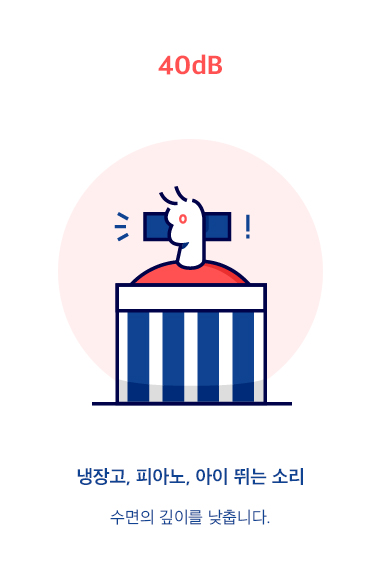
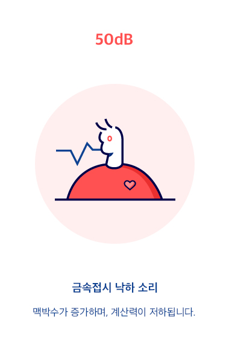
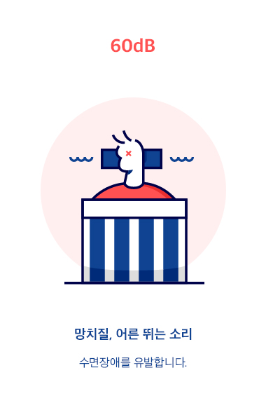
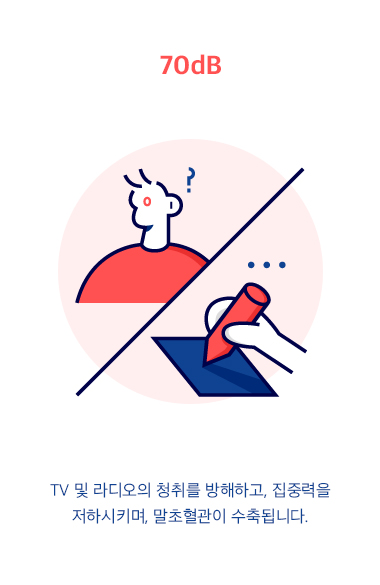
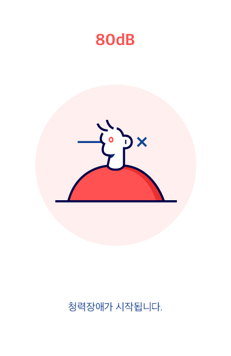
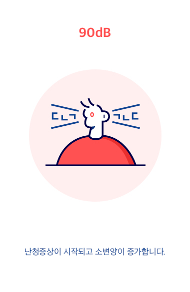
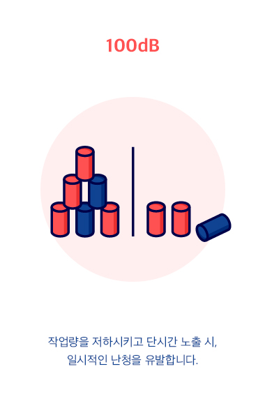
©2019 New media design show